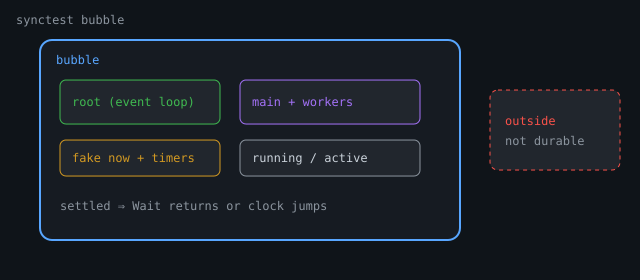

testing/synctest: Bubbles, Durable Blocks, Fake Time
testing/synctest: Bubbles, Durable Blocks, Fake Time
Overview
testing/synctest is not a polite time.Sleep helper. It is a runtime feature exposed through a thin testing API: the scheduler tracks an isolated bubble of goroutines, channels, and timers, and can answer a precise question instead of guessing.
Has every goroutine in this test either finished, or reached a block
that only another goroutine in the *same* bubble can unblock?If yes, the bubble is settled. Then synctest.Wait can return, or the fake clock can jump to the next timer deadline—without burning wall-clock time.
Sources / depth. This chapter synthesizes the public API with runtime-level concepts documented in guest runtime walkthroughs such as Fake Clocks, Real Guarantees: Inside Go’s synctest (Alex Rios / Internals for Interns; runtime as of ~Go 1.25–1.27). Prose and diagrams here are original. Always verify symbols against your
GOROOTandgo doc testing/synctest.
Availability: experiment in 1.24 → stable package from 1.25 → synctest.Sleep in Go 1.27. Check go version before relying on APIs.

The problem it solves
// Ordinary concurrent test — a guess dressed as a test
go doSomething()
time.Sleep(10 * time.Millisecond) // hope the G ran
if !done {
t.Fatal("not done")
}Longer sleeps only buy a slower guess. Scheduling order, machine load, and GC jitter all change whether 10ms was enough.
ordinary test synctest
───────────── ────────
go doWork() bubble { workers, timers, chans }
│ │
v v
time.Sleep(10ms) ◄── guess Wait / clock jump ◄── proof
│ │
v v
assert "probably done" assert only after SETTLED
(all Gs done or durably blocked)Public API (small overlay)
Typical surface (confirm on your version):
synctest.Test(t, func(t *testing.T) { ... })
synctest.Wait()
synctest.Sleep(d) // Go 1.27+: Sleep + Wait convenience
// older / internal shape also used synctest.Run(func(){...})testing/synctest thin public package
│
▼
internal/synctest glue
│
▼
runtime/synctest.go bubble, counters, event loop
+
runtime proc/chan/time/sema/select durability hookssynctest.Test creates a bubble, adapts *testing.T (child T marked as synctest), and runs your function through normal tRunner so Fail/Fatal/cleanup/logs/race still work.
Inside a bubble, some T methods panic (e.g. t.Parallel, t.Run as normal nested subtests, t.Deadline in designs where wall deadline vs fake time.Now would be nonsense). Treat the bubble as a special domain, not a nested subtest tree.
The bubble
Conceptual structure (names follow runtime ideas; fields evolve):
synctestBubble
now fake clock (ns) — starts at a fixed epoch (often 2000-01-01 UTC)
timers private timer heap driven by bubble.now
root controller G (event loop; not your test body)
main G that runs the test function
running count of Gs not yet proven durably blocked
active bookkeeping for mid-park / wake gaps
... ┌───────────────── synctest bubble ─────────────────┐
│ root G (event loop; not test body) │
│ │ │
│ ├── bubble.now (fake clock) │
│ └── bubble.timers (private heap) │
│ │
│ main G (test function) │
│ └── worker Gs (inherit bubble on go) │
│ │
│ running / active counters → settled? │
└───────────────────────┬───────────────────────────┘
│ may touch (not durable)
v
outside world / globals / netMembership
Every g may carry bubble *synctestBubble.
On go f() (newproc1):
- User Gs inherit the parent’s bubble pointer.
- System Gs (GC, netpoll helpers, …) do not inherit membership.
So membership spreads automatically down the spawn tree without tagging every go statement.
Test body (in bubble)
└─ go worker → in bubble
└─ go nested → in bubble
Runtime GC G → not in bubbleRoot vs main
Run/Test does not run your function on the root. Root becomes the controller; a main goroutine runs the test (and for Test, adapters/tRunner are also members). Root owns the fake-time event loop.
Durable blocking = wait reason
Durable block (docs language): blocked and can only be unblocked by another goroutine in the same bubble.
Runtime implements this with waitReason when a G parks (_Gwaiting). A table marks which reasons are idle in synctest.
| Typically durable (idle) | Typically not durable |
|---|---|
time.Sleep (fake timer) |
sync.Mutex.Lock / RWMutex |
| send/recv on bubbled channel | send/recv on outside channel |
| select where every case is bubbled | select with any outside channel |
sync.Cond.Wait (with bubble wake checks) |
— |
WaitGroup.Wait when associated to this bubble |
WaitGroup not associated / wrong bubble |
nil-chan send/recv, empty select{} |
(deadlock path if nothing else can finish) |
synctest.Wait itself |
— |
G parks
│
v
status == _Gwaiting? ──no──► counts as running (not settled)
│
yes
v
waitReason idle-in-synctest? ──no──► still "running" for bubble
│
yes
v
DURABLE block → running--Why mutex fails the test: a mutex has no bubble ownership. An outside G could Unlock. The runtime refuses to call that settled, so synctest.Wait may hang until the outer go test timeout—not always a nice bubble deadlock panic.
Two counters, one invariant
running > 0 || active > 0 ⇒ "something still going on"| Counter | Meaning |
|---|---|
running |
Gs not yet proven durably blocked (not the same as “on CPU”) |
active |
Scheduler bookkeeping during mid-park, wakes, root loop tokens |
Parking is not atomic: status may drop to waiting before a commit function finalizes the park. Without active, the bubble could see running == 0 in that gap and false-settle.
worker G bubble counters
│ │
│ incActive (mid-park) │
│─────────────────────────────►│ active > 0
│ status → waiting │
│ (running may hit 0 early) │ running==0, active>0 ← not settled yet
│ park committed / aborted │
│ decActive │
│─────────────────────────────►│ only now both may be 0 → settledStatus changes go through the scheduler’s status CAS path; bubbled Gs call into bubble accounting (changegstatus-style hooks).
Root event loop (fake time)
When settled (and timers remain), the root:
- Runs fake timers due at
bubble.now - Tries to park (handing back its
activetoken) - Looks at next timer deadline
- Either jumps
bubble.now = nextor exits (done / no timers)
root loop
│
v
run timers due at bubble.now
│
v
try park (release active token)
│
v
next timer deadline?
│ │
none some
│ │
v v
stop loop bubble.now = next ──┐
│ │ │
v └───────────────┘
main done & no leftover Gs?
yes → clean exit
no → deadlock panic (durable stuck / leaked Gs)Fake time never wall-waits once settled. Ten “seconds” of Sleep can finish in microseconds of wall time: now is assigned, not slept.
Fake clock starts ~2000-01-01 00:00:00 UTC
G2: Sleep(3s) timer @ 00:00:03
main: Sleep(10s) timer @ 00:00:10
both park → settled
root jumps now → 00:00:03 → G2 runs
settled again
root jumps now → 00:00:10 → main runstime.Now inside a bubble
Runtime returns bubble.now for wall time. Monotonic component is often zero so mixing inside/outside times does not invent a second confusing clock. time.Since still works because the bubble wall clock is under runtime control.
Fake timers
Timers created in a bubble are marked fake and live on the bubble timer heap, not a normal per-P heap. Callbacks (e.g. AfterFunc) briefly count as bubble activity so spawned Gs inherit membership.
Channels: married at make
hchan.bubble set in makechan if creator is in a bubble| Action | Effect |
|---|---|
| send/recv/close from outside bubble | fatal (process-killing runtime error) |
| block on bubbled chan | wait reason is synctest send/recv → durable |
| block on unbubbled chan | not durable |
// wait reason conceptually:
// unbubbled: waitReasonChanSend
// bubbled: waitReasonSynctestChanSend // idle-in-synctestSelect
Durable only if every non-nil case is a bubbled channel in the current bubble. One outside case spoils the proof → non-durable select wait.
select {
case <-bubbledCh: // ok
case <-time.After(d): // After's chan is bubbled if created inside
case <-outsideCh: // spoils durability
}WaitGroup association (heap special)
WaitGroup packs a bubble membership bit into state and, on Add inside a bubble, associates via a heap special (same family of side notes as finalizers).
Durable WaitGroup.Wait requires roughly:
1. Add happened in a bubble
2. Wait called in a bubble
3. Same bubble association still validPackage-level var wg sync.WaitGroup lives in the data segment—no heap object to attach the special to. Association can fail; waits may never count as durable.
Prefer:
wg := new(sync.WaitGroup) // heap-allocated
// or local var that escapes to heap as neededMiss association → bubble may never settle while Wait is blocked.
sync.Cond
Cond.Wait parks with a reason marked idle. Ownership is checked on wake: signaling a bubbled waiter from outside its bubble is fatal. Durability rides on parked g.bubble, not a field on Cond itself.
Mutex: deliberately non-durable
var mu sync.Mutex
synctest.Test(t, func(t *testing.T) {
mu.Lock()
go func() {
mu.Lock() // blocks — NOT durable
}()
synctest.Wait() // may hang forever (outer test timeout)
})flow:
[ND]
|
v
[R]
[R]
|
v
[H]Debug fork:
| Symptom | Look for |
|---|---|
| Named deadlock panic from bubble | All durable blocks, no timers left / leaked Gs after main exit |
Hang until go test timeout |
Non-durable wait: mutex, unbubbled channel, bad WaitGroup association |
Deadlock detection (when root can prove it)
When the root stops and leftover Gs remain:
- “all goroutines in bubble are blocked” — durable deadlock, no timer escape
- “main exited but blocked goroutines remain” — leak after test function return
Stricter than ordinary tests: a forever-blocked bubbled channel is a loud failure, not silent process exit.
Isolation cheat sheet
Created inside bubble:
channel → hchan.bubble
timer → isFake, bubble heap
WaitGroup → associate on Add (heap)
From outside:
send/recv/close bubbled chan → fatal
fake timer stop/reset from out → fatal
WaitGroup Add from wrong bubble → fatal
Outside objects used inside:
allowed, but waits usually NOT durableIsolation is not a sandbox
The test can still touch globals, disk, network. Those ops are not part of the settling proof. Keep I/O out of unit bubbles or accept non-determinism.
End-to-end narrative
func TestWorkerTimeout(t *testing.T) {
synctest.Test(t, func(t *testing.T) {
ch := make(chan string) // bubbled
go func() {
select {
case msg := <-ch:
t.Log("got", msg)
case <-time.After(5 * time.Second): // fake timer
t.Error("timed out")
}
}()
time.Sleep(3 * time.Second) // fake
ch <- "hello"
})
}sequence (top → bottom):
actors: Root, Main, Worker, bubble.now
Root --> Main : start test G
Main --> Worker : go select
Worker --> Worker : park durable select
Main --> Main : Sleep 3s park durable
Root --> bubble.now : jump to +3s
Main --> Worker : send hello
Worker --> Worker : log and exit
Main --> Root : return clean
note: settled running=0No wall wait for “3 seconds”; no sleep-and-hope after the send.
synctest.Wait and the race detector
When Wait unparks, the runtime establishes a happens-before edge (raceacquire-style) so reads after Wait of data written by now-blocked Gs are not false races. Matching releases fire when Gs durably block, exit, or finish fake timer callbacks.
synctest.Sleep(d) (Go 1.27+) ≈ time.Sleep(d) + Wait(): advance clock, then wait for reactions to settle. Same-instant timer order remains unspecified; trailing Wait makes that OK for most tests.
Practical rules
- Create channels/timers inside the bubble you care about.
- Use heap WaitGroups if you need durable
Wait. - Do not expect
Mutexwaits to settle the bubble. - Prefer
synctest.Waitover wallSleepfor “work finished”. - Hang vs panic: hang → non-durable; panic → durable deadlock/leak.
- Still run
go test -race. - Don’t nest
synctest.Run/Test(runtime panics).
Relation to other chapters
| Topic | Chapter |
|---|---|
| Flaky concurrent tests | 260 Testing |
| GMP / parking | 201 Scheduler |
| Timers | 214 Timers |
| Channel internals | 203 Channels |
| Context timeouts | 255 Context |
Reading the source (same path as the article)
testing/synctestpublic API
- testing hook /
Tadaptation
runtime.synctestRun/ bubble struct
- status hooks + wait reason table
timelinknames + fake timers
makechan/chansend/selectgo
sync.WaitGroup+ semacquire durable flag
- Package tests under
internal/synctest
Experiment
go version
go doc testing/synctestfunc TestFakeSleep(t *testing.T) {
// Use the API your version exports: Test and/or Run
synctest.Test(t, func(t *testing.T) {
start := time.Now()
done := make(chan struct{})
go func() {
time.Sleep(30 * time.Second)
close(done)
}()
synctest.Wait() // or Sleep if available
<-done
// wall time should be tiny; bubble time advanced ~30s
if time.Since(start) > time.Second {
t.Fatalf("wall clock moved too much: %v", time.Since(start))
}
})
}go test -race -count=100 -run TestFakeSleepWhat to notice: 30s of fake sleep does not cost 30s of CI.
Try next: Add a mutex-blocked G and observe Wait hang vs durable channel deadlock panic.
Recap
| Idea | One line |
|---|---|
| Bubble | Isolated scheduler domain for one test |
| Membership | Inherited on go; system Gs excluded |
| Durable block | Wait reason marked idle-in-synctest |
| Settled | running==0 and active==0 |
| Root | Advances fake clock / wakes Wait / detects deadlock |
| Fake time | Jump now on private timer heap |
| Objects | Chan/timer/WG associated; outside touch often fatal |
| Mutex | Never durable—by design |
The tiny API is small on purpose. The proof that a concurrent test is settled lives in the runtime—membership, wait reasons, timer heaps, and isolation—exactly what user-space mocks cannot see.